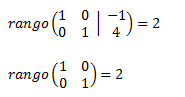
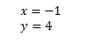

Ejemplo
Ejemplos de aplicación
Método de eliminación gaussiana:
La región Sierra de nuestro país, por su clima y suelos, es apropiada para el cultivo del palmito, brócoli, tomate, cereales, legumbres y frutas que son muy cotizadas en los países a los cuales se exporta.
Una empresa agrícola dispone de 100 hectáreas en las que se produce palmito y brócoli. Cada hectárea de palmito requiere 700 horas de mano de obra, y cada hectárea de brócoli, 300 horas. Si se dispone de 44 000 horas y se utilizan todos los recursos humanos y de tierras, ¿cuántas hectáreas de cada grupo deben sembrarse?
Organizando los datos en una tabla, tenemos que:
| Ha. Palmito | ha. Brócoli | Total | Ecuación |
| x | y | 100 | x+y=100 |
| Núm. horas palmito | Núm. horas brócoli | toal | Ecuación |
| 700x | 300y | 44000 | 700x+300y=44000 |
El sistema de ecuaciones formado es:
x + y =100
700x +300y = 44 000 ;
El sistema equivalente es: 00y = 44 000 ;
El sistema equivalente es
x + y =100
7x +3y = 440
Para resolver el sistema de ecuaciones por eliminación gaussiana, se procede así:
| Fila 1 | 1 1 | 100 |
| Fila 2 | 7 3 | 440 |
| Enunciado de filas | Operación | Operación |
Primero, obtenemos la matriz aumentada ubicando los coeficientes de las bariables y terminos independientes.
Tenemos que transformar a su forma escalonada, es decir, hacer ceros hacia abajo.
F2→F2-7F1 es decir:
| 1 1 | 100 |
| 0 -4 | -260 |
Segundo, verificamos que la fila 1 empiece con el número 1, como es el caso. Entonces: a la fila 2 le restamos la fila 1 multiplicada por 7 que es el coeficiente de x de la fila 2.
Ahora debemos formar la diagonal de la matriz, convirtiendo 41 en 1.

Tercero, multiplicamos la fila 2 por –1/4. Esta última matriz ya tiene la forma escalonada. Entonces y = 65.
Cuarto, reemplazamos el valor de y en cualquier ecuación del sistema.
x + 65 = 100, x = 35.
Solución:
La empresa debe plantar 35 ha de palmito y 65 ha de brócoli
Ejercicio
Sistema de Ecuación (dimensión 2x2)

La raya vertical separa la matriz de coeficientes de la matriz columna de términos independientes.
Realizamos operaciones elementales fila para obtener la matriz en forma escalonada reducida:
| Multiplicamos la primera fila por 1/5 y la segunda por 1/3: | |
| Sumamos a la segunda fila la primera: |  |
| Multiplicamos la segunda fila por 5/7: |  |
| Sumamos a la primera fila la segunda fila multiplicada por -2/5: |  |
Esta última matriz equivalente ya tiene forma escalonada reducida y nos permite ver rápidamente los rangos de la matriz de coeficientes y de la ampliada.
Calculamos los rangos de la matriz coeficientes y de la matriz ampliada:

Como los rangos son iguales y máximos, por el Teorema de Rouché-Frobenius, el sistema es compatible determinado. La matriz obtenida representa el sistema.

Obra publicada con Licencia Creative Commons Reconocimiento Compartir igual 4.0